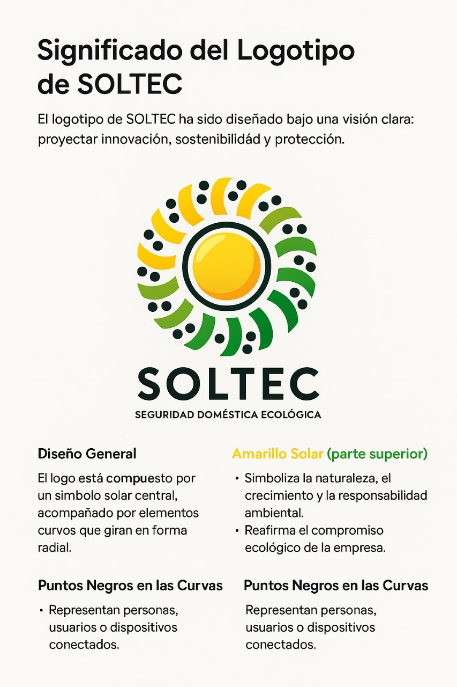

Descripción General
SOLTEC® es una empresa comprometida con el desarrollo y la innovación en el campo de la seguridad doméstica sustentable. A través de tecnología avanzada, buscamos ofrecer soluciones eficaces para la protección de los hogares, con un enfoque hacia la sostenibilidad y el uso de energías renovables, como los paneles solares.
La razón de ser de SOLTEC® radica en la necesidad de crear productos que no solo protejan a las personas, sino que también respeten el medio ambiente, ofreciendo alternativas ecológicas que mejoren la calidad de vida de nuestros clientes.
Nuestro objetivo es transformar la forma en que las personas se sienten seguras en sus hogares, mediante soluciones tecnológicas que sean tanto efectivas como responsables con el entorno.
Misión
Proveer soluciones de seguridad doméstica sustentable mediante el uso de tecnología avanzada y energías renovables, con el objetivo de ofrecer un hogar más seguro y respetuoso con el medio ambiente, mejorando la calidad de vida de nuestros clientes.
Visión
Ser la empresa líder en seguridad doméstica sustentable en América Latina, reconocida por su innovación tecnológica, compromiso ambiental y su capacidad para brindar tranquilidad a las familias, mejorando su seguridad y bienestar.
Valores
- Innovación: Buscamos constantemente nuevas soluciones que mejoren la seguridad y la sostenibilidad.
- Compromiso con el Medio Ambiente: Todos nuestros productos están diseñados para ser ecológicos y sostenibles.
- Responsabilidad: Actuamos con integridad y ética, poniendo siempre a las personas y su bienestar como nuestra prioridad.
- Calidad: Nuestros productos están fabricados con los más altos estándares de calidad para garantizar un excelente rendimiento y durabilidad.
- Tranquilidad: Nos aseguramos de que nuestros clientes se sientan seguros, cómodos y protegidos con cada uno de nuestros productos.
"Protege lo importante"
Para SolTec® lo más importante por proteger es su gente y nuestro planeta.
Significado del Logotipo
Fundadores de SOLTEC
Javier Díaz López
Co-fundador
Experto en sistemas y desarrollo sustentable. Aporta visión tecnológica con enfoque ecológico.
Annyelo Tian Mí Médina Lam
Co-fundador
Responsable de innovación tecnológica. Diseña soluciones seguras y eficientes.

Jennifer Mendoza Guerrero
Co-fundadora
Impulsora de la visión social y ecológica. Su sensibilidad guía el espíritu de SOLTEC.
Brittany Nayleth Juárez Hernández
Co-fundadora
Representa el enfoque humano y comunitario que da corazón a cada proyecto.
Jesús Eligio Tirado Lara
Co-fundador
Responsable de la estrategia operativa y técnica, haciendo que las ideas funcionen.
Jennifer Ornelas Pantoja
Cofundadora ( D. E. P.)
Su impulso inicial fue clave para el nacimiento de SOLTEC. Siempre será parte de nuestra historia.
Bebé Mendoza (por nacer)
Miembro honorífico
Acompañó a la empresa desde el vientre materno. Representa el legado y esperanza del futuro.